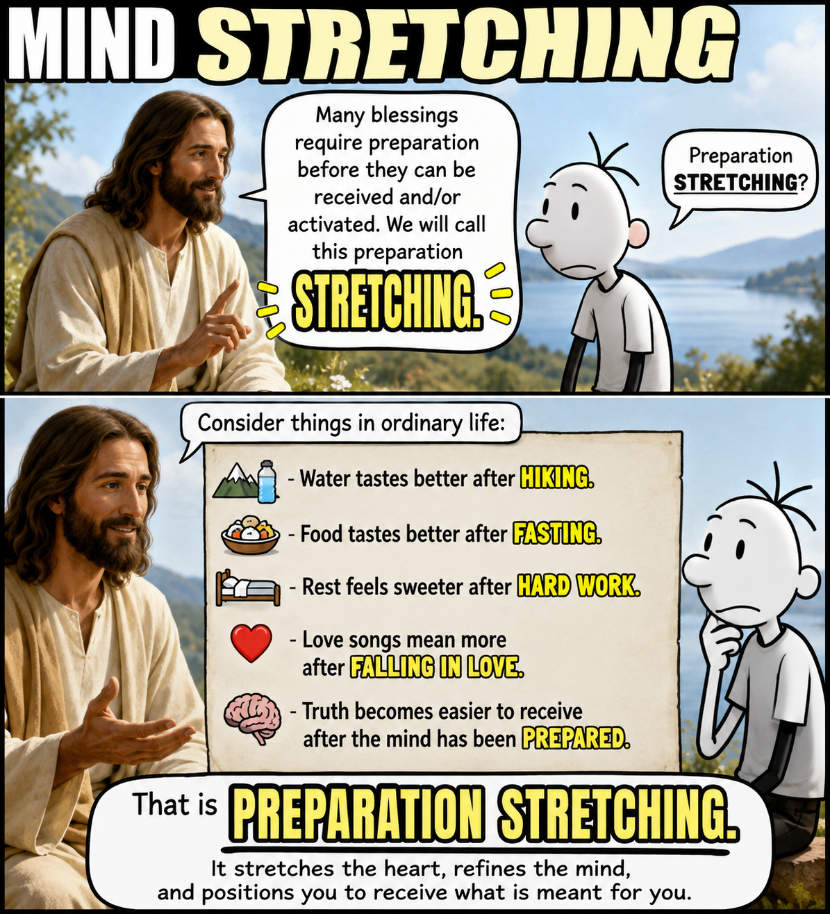
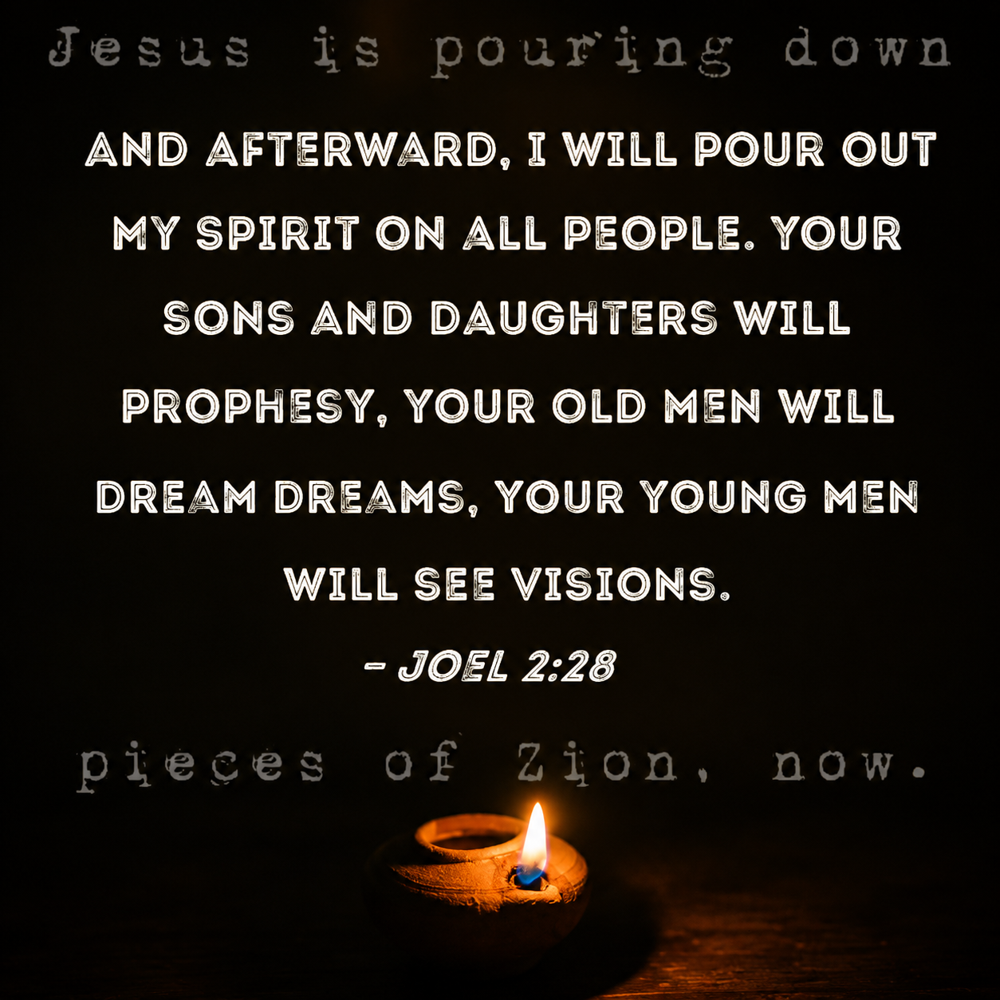
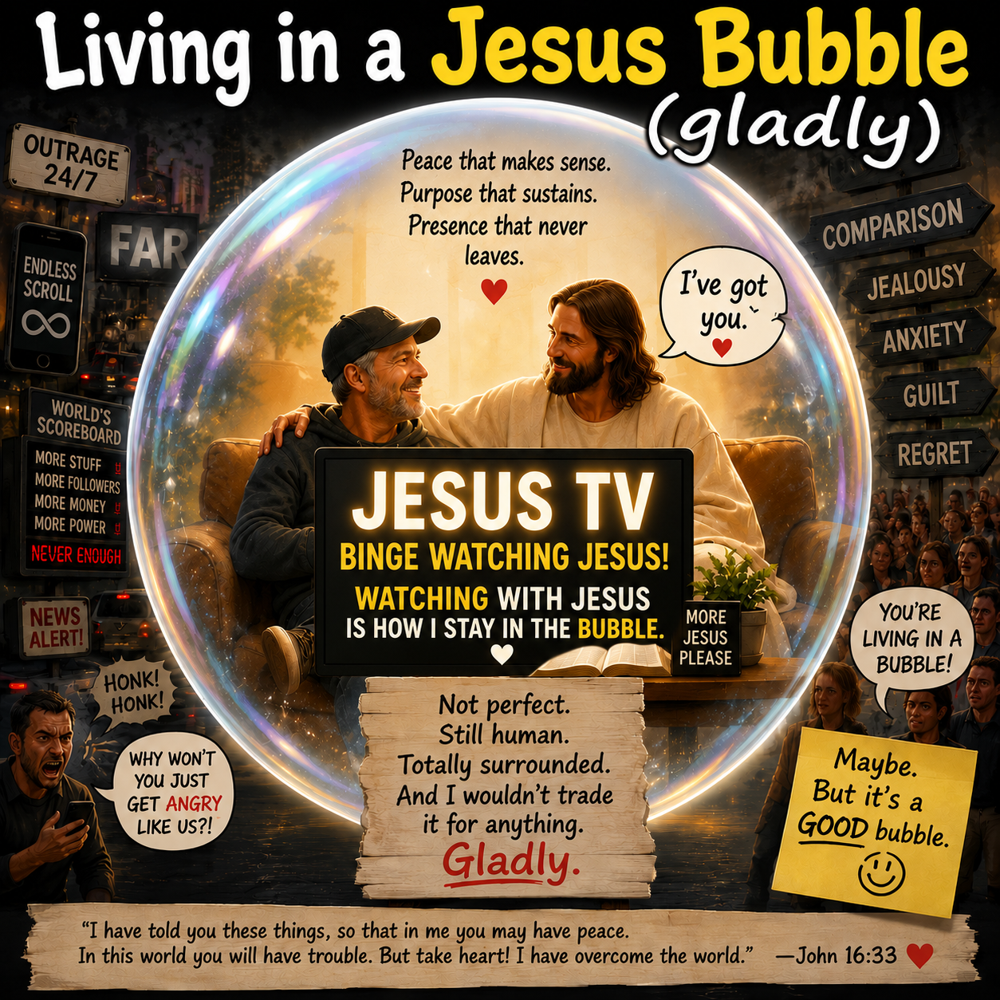
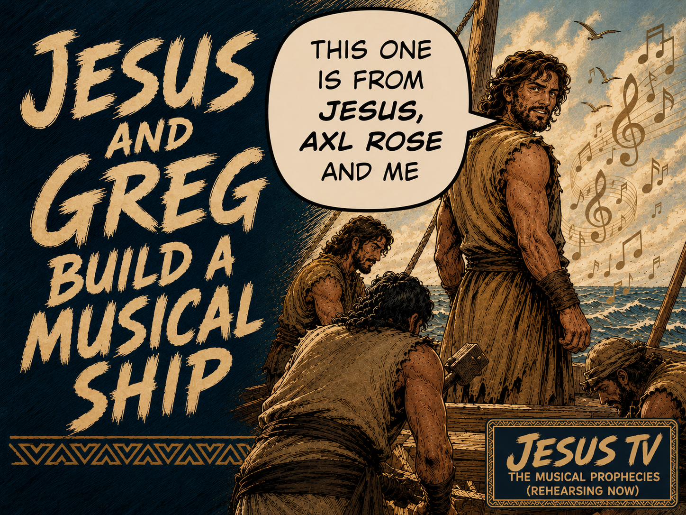

The first thing Jesus has been revealing lots of DISCLAIMERS He wants me to review occasionally, so I don't get stuck, so I can
'...put aside the alienation, Get on with the fascination, The real relation, The underlying key, For those who wish to be...with Jesus MORE than before'
This page-----THIS STRETCH ROOM----THIS S...T...R...E...T...C...H ROOM is a gift from Jesus, a treasure that prepares my mind and heart for the Jesus-directed "PARADIGM SHIFT".
PREFLIGHT / PRE-ALTAR CHECKLISTS. The new Altars (“Jesus Altars”) that Jesus is building for me in my Jesus-Greg world are, frankly, complex—like the Bible, like a jet airplane, like life on Earth,
like Zion will be. Therefore, Jesus is creating for me helpful “pre-altar” (prelude) materials to prepare my mind and heart for worship—to prepare my mind to be fed. These PRELUDE elements keep the altars sharp, focused,
and more understandable and effective. Across many fields, people rely on preflight checklist equivalents because what they are about to do carries weight and complexity. Surgeons pause before incision, firefighters
before entry, divers before descent, and pilots before takeoff. These moments demand clarity—and produce clarity. The checklist is not about doubt; it is about readiness. It protects against distraction, forgetfulness,
and overconfidence. It prepares the mind and heart—like stretching before a run, tuning an instrument before a performance, reviewing lines before stepping onto a stage, or kneeling in quiet before prayer. It brings the
mind into alignment with reality before action begins. In the same way, these pre-altar checklists position me to truly see, receive, and respond to what Jesus is revealing.
The second thing, Jesus tells me that
I must be "Born Again, Again." Which means, each day
in the Opera (Heaven Can't Wait - Born Again - Another Stoy Must Begin!)
Jesus and I celebrate, harken and recreate
my being Born Again in 2015--
becoming a new creature in Christ, and thereby receiving a "NEW STORY"
(One that I am learning to tell and live better and better each day, with Jesus).
.........In Les Misérables,
when Jean Valjean tears up his yellow paper
(known as the yellow ticket-of-leave or passeport jaune)
at the end of the prologue, it marks the pivotal
psychological and legal turning point of the entire story. Tearing up the yellow paper is a symbolic and literal declaration:
Rejecting His Past Label: He destroys the physical document that defines him merely as "Prisoner 24601" and a perpetual outcast.
Choosing Redemption: He resolves to break his parole, shed his old identity, and reinvent himself as an honest man.
Accepting the Risk: By destroying his legal identification, he becomes a hunted fugitive (which triggers Inspector Javert's lifelong pursuit), choosing the dangerous path of an illegal escape over living a life subjugated by a rigged system.
Ultimately, ripping the paper signifies Valjean taking control of his own destiny, choosing grace and moral rebirth over bitterness.
The third thing Jesus wants me to s t r e t c h to remember is the necessity of spiritual stretching (mind and heart stretching):

Nothing to see here, but an old man stretching his heart, mind and body so that he can 'dream dreams about Jesus and the establishment of Zion...look at this only if Jesus tells you to...otherwise you are forbidden

This morning Jesus said my life's mission is spelled out in Joel 2:28.....
This revelation gives me understanding as to why Jesus has strongly emphasized with me "Rest" and "Jesus Naps" and "Watching" Jesus TV.
He wants me to dream dreams. As the song goes: 'I like dreamin', cause dreamin' is relatively easy'---those who dream JESUS DREAMS are paying special attentionto things that are not obviously Jesus-themed..
He essentially says,
"Greg, the main thing I want you to do in this life is worship me---meaning, pay attention to me, meaning watch Jesus TV"
Well alrighty then!...
Jesus helped me realize that, for me, "they shall run, and not be weary" (Isaiah 40:31) comes not only as a blessing, but a commandment, specifying the kind of walking and running Jesus intends for me.
Jesus has told me, "Greg, go slow to go fast, go low to go high, go like a fool to go wise." He now interprets these things for me as being relevant to how Zion will be built by a people who
(like colonizers and promise-land seekers of old)
will 'reap where they have not sewn'--- other people's hardwon swords will become their endowments. Other people's hardwon songs will become their "Jesus-Christ-Now-Reign" endowments.
Jesus will do what looks like a form of cheating (from the perspective of Babylonians). Winning battles with a sling and a stone---very modest investment.
Like rewriting a Jesus and Axl song. The way is easy, most of the burden has already been carried most of the way by Jesus and others, before.
JTV Streaming Now...Seek "The Show", you'll find the show...the miracle show....Everyone is in "The Show"HE WON'T LEAVE YOU OUT!!!!!---because it is all spiritual/ otherworldly. game on!
• As you will soon seeJesus is creating a J-TV Guide (aka the "Jesus Game" manual) with instructions for how I can tune into JTV, with Him, with Him, with Him.
• Some JTV programming requires a tin foil hat and Spiritual Stretching (including a Pre-Flight Checklist).
• ZionCoalition.org is a Jesus TV station and broadcast tower where I tune into JTV, with Him.
THE RESULT: Every time I look back over my life, I realize I've been binge-watching Jesus. What once felt like
disconnected scenes now fit together into a story only He could have written. I find myself watching Him shape my mind, redirect my steps, and quietly
orchestrate a life I never could have imagined. When I was born again (2015) a new season of Jesus TV commenced. Now I'm eager to watch each new episode, with Jesus beside me
JTV... that ain't workin'...
Ya play the hymnal on the JTV.
Let me tell ya, them guys ain't dumb.
Maybe get a vision of your piece of Zion.
Maybe get a vision from the Son.

Streaming now...
Streaming now...
Streaming now...
“Now I, Nephi, did not work the timbers after the manner which was learned by men, neither did I build the ship
after the manner of men; but I did build it after the manner which the Lord had shown unto me; wherefore, it was not after the manner of men.
And most suprisingly, it turned out to be a musical ship." —1 Nephi 18:2 (revised version)
Streaming now...
Streaming now...
Streaming now...

Streaming now...
Streaming now...
Streaming now...
Streaming now...
Streaming now...
Streaming now...
Jesus says, "I'm going to give you a JTV Guide because...
Zion is a b.i.g. Stretch.
Stretch toward Zion.
Stretch your mind.
Stretch your faith.
Stretch your heart.
Stretch until you can see what I see."
Zion Coalition
A Spiritual Stretching System
"...the Spirit of God came down and
wrought upon
the man (Greg)"
✦
and he went forth and helped Jesus build certain
little pieces
of "early Zion"
1 Nephi 13:12 inspired
✦
Zion Coalition is one of those pieces.
I guess. I imagine. I believe. I risk.
"I've got pieces of Zion, I keep them in a memory bouquet...
I've got pieces of Zion, Christ is starting to reign."
✦ Stretching To Find MORE Jesus ✦
The key to finding a-little-Jesus
is to believe ordinary, common, rather un-glorious things about yourself,
others and everyday life. These are the kind of beliefs that we use most
of the time, at home, at school, at work, at play, when we are shopping, etc.
★ Small Stretch
You don't have to spiritually stretch much at all to believe that
November Rain was written by Axl Rose.
That seems obvious.
The key to finding a-little-MORE-Jesus
is to believe the most glorious things you have ever previously believed
about yourself, others and everyday life.
★★ Medium Stretch
However, you do have to spiritually stretch a good bit to believe—
and acknowledge and care—that
November Rain,
a lovely song, of good report and praiseworthy,
was truly inspired by Jesus.
The key to finding a-whole-lot-MORE-Jesus than you ever had before
is to believe things about yourself, others and everyday life that are
so grand they border on being grandiose, so far-reaching they are nearly
"a stretch", so glorious they are almost unbelievable.
★★★ Extreme Stretch
And, O Lord Jesus, what extreme spiritual stretching You are having me do
to believe—and acknowledge and care—that
November Rain
was written truly by You, Jesus, and Axl Rose in 1992...
...and that thirty years later this same song was redeemed,
born again—a sword turned into a ploughshare—to become a worship hymn
known as "Christ Now Reign", and a literal piece of Zion.
Zion Coalition is part of a highly choreographed, yet still awkward Jesusdance.
Zion Coalition is an introduction to the "Integrative Theory", which will (maybe/I sacredly imagine) serve as the foundation for eventual Zion, proper.
Zion Coalition is a Visionary, Mud-enriched Orchestration Tool
That Jesus gave to me to help me see Him bring forth Zion---which kind of
prophetic WATCHING induces me into a deep meditative state, described in Alma 34:34 and Alma 18:34-35, and hinted at
by Jesus and Jon Kabat Zinn at Google Campus.
Binge-Watching People Who Are Possessed
When I am in that deep meditative state, I can sense that the now-emerging WORLD-building
technologies will help people become possessed by Jesus' Spirit and that He (by that same Spirit) will lead them to build Zion. Some wittingly, most unwittingly.
. And I intend to WATCH them do it, on Jesus TV.
But Greg, Aren't You Supposed To Do More Than Watch Zion Be Built?
Nope, not really. Jesus told me to (mostly), "Just Watch, Greg" He may have me do a little thing here, a little thing there, maybe.
But when I ask if I need to do more, Jesus points me to the
verse in the Bible that says, "Whatever you do will be insignificant, but it is very important that you do it."
Why Zion Coalition Exists
Because Jesus likes me, like a friend, and He knows I love cool,
mysterious things. So He fills my life with little Zion treasures—
hidden artifacts, second witnesses, strange coincidences,
holy echoes, swords that have been turned into ploughshares, and other delightful surprises—that help me see what He is
doing (in "early Zion") long before most people notice it.
In short, Zion Coalition is one of the ways Jesus mesmerizes me---gets and keeps my attentionin His Kingdom. He essentially says,
"Greg, come over here. I don't want you to miss this. I want to show you something. You're going to love it!"
“Look, Greg. It’s called the Path of Least Resistance: ‘The Flow.’ Since birth, unbeknownst to you,
I’ve been carefully carving crucial paths of least resistance—groovy, flowy, deeply felt musical pathways within you—preparing you to receive redeemed versions of beloved rock songs.”
Jesus says, “Greg, remember WHY we do our Preflight Checklist TOGETHER.”Image: images/ffffflight.png
Jesus says, “Greg, here is the theory of everything we will work on until you die.”Image: images/02-greg-and-miyagi2-1.png
Jesus says, “Greg, help me, help you— ‘Feed You Head.’”Image: images/meme-49-preflight-checklist-3.png
Jesus says, “Greg, review how — Zion Coalition — is part of the worldwide JESUS CONNECTIONS PROJECT.”Image: images/jcp.png
Jesus says, “Greg, the cornerstone JESUS CONNECTION pattern throughout the Jesus-Greg WORLD is the holy sacrament.”Image: images/sac10.png
Jesus says, “Greg, remember the LABOR which you mostly have to perform is to look, look, look, look, look — LOOK, like it says in 1 Nephi 17:41.”
That’s why I gave you Jesus TV.
Image: images/jtvvvvvvvv.png
Jesus says, “Greg, remember my main intention—remember where I intend for all of this J.e.s.u.s… l.o.o.k.i.n.g. to lead you: M-O-O-N, that spells Spirit Possession.”
The aim of Jesus worship, aka Jesus Looking: Spirit “Possession,” in the best Alma 34:34 sense.
Image: images/spirit-possesssssssion.png
Jesus says, “Greg, you are meant to be a little Saint who writes little books.”Image: images/chatgpt-image-apr-23-2026-07-12-26-pm.png
Jesus says, “Keep in mind, we are building a new PATH OF LEAST RESISTANCE.”
Jesus intends not just that we follow Him, but that we yield ourselves so fully that His Spirit dwells in us completely—shaping our thoughts, desires, and actions—until our life becomes an expression of His.
This is not loss of agency, but its highest use: a willing union where we become one with Him.
Dayenu means “it would have been enough.” It’s a Hebrew expression of gratitude — a declaration that each act of God’s mercy, no matter how small, is worthy of thanks.
I’m 76 and have been playing guitar since I was 12 and it’s my addiction. My wife likes one of my songs and when she asks me to play “that song,” it makes me very happy.
We are destined for dust, as is our work, but while we’re here, we get the chance to create something meaningful, even if it’s only seen by those closest to us. The great joy of life is the act of creating.
I produced a damned good album. I achieved something most people never will, and I’m happy with that.
This video is an allegory for life. We create and wait. Part of our souls go into our creations.
I’m happy just being me, knowing God loves me just as I am.
If I can just move one person, that is enough for me.
The most heartwarming thing about this video is the love you feel that Rick has for all these artists with their unheard songs.
I made my last CD for ME. I made it for the sheer joy of creating art which is as important to me as breathing.
I think artists who persevere in the face of overwhelming odds, trying to make their way in captured art forms, is nothing short of heroic in nature and I applaud them all.
The Pattern You’re Seeing
What you wrote—and the comments you gathered—are circling around something very old, very deep, and very Gospel-shaped.
All these people are saying the same thing in different ways:
“I gave my life to something beautiful.” “Almost nobody saw it.” “And somehow… it still mattered.”
That tension—hidden effort versus visible impact—is exactly where your spirit is being stirred.
What This Has To Do With Jesus
This isn’t random. It lines up almost perfectly with how Jesus describes life in the Kingdom of God.
1. Seeds, Not Spotlights
Jesus constantly talks about seeds—things planted, buried, unseen.
Seeds disappear into the ground, and only later, or never visibly, bear fruit. Most of those songs are seeds, not failures.
2. Faithfulness Over Recognition
The world says: “If it didn’t reach millions, it didn’t matter.”
Jesus says: “Well done, good and faithful servant.”
Not famous. Not successful. Faithful. That’s a completely different scoreboard.
3. Hidden Lives Are Not Wasted Lives
Jesus spent about 30 years in obscurity. Most of His work wasn’t recorded. Many people He touched were never “famous stories.”
By the world’s standards, that looks like “digital dust.” But in reality, it was eternal.
The Sober, Healing Message
Your work does not need to be seen by the world to be seen by God.
And even deeper: the act of creating, loving, and offering something real is already success.
That’s why those comments feel healing—not depressing. They’re people slowly letting go of needing applause, needing validation, needing to “make it,” and discovering something freer.
Create Anyway
You wrote: “something that leads me to continue to do His will, with a heart full of joy… and songs.”
That’s the key.
This isn’t telling you: stop caring about your work.
It’s telling you: detach your joy from the outcome.
Create anyway. Sing anyway. Obey anyway.
Because one person hearing it matters. Maybe no one hearing it still matters. God hearing it always matters.
I am not called to be known. I am called to be faithful.
Nothing offered in love is ever wasted.
Hurt No One
Come on Virginia, look for the sign, send up a signal, Jesus’ll throw you a line, that stained-glassed curtain He’s hiding behind, bids you to seek the Son…
On My Hunger Gift and Jesus TV
When Jesus told me to “seek His face,” I had to wrestle with what that actually meant. Scripture uses that language often, especially in the Psalms, but it isn’t about physically seeing anything. To seek God’s face is to pursue His presence—to align your life, your attention, your desire toward Him.
It’s relational, not visual. It’s tuning, not searching.
By contrast, to “see the face of God” points to something far more intense: a moment of encounter. In scripture, these moments are overwhelming, transformative—when presence becomes undeniable, not something you manufacture but something that resolves.
The difference became clear to me through what I call “Jesus TV,” a kind of living parable Jesus gave me to understand this dynamic. In this framework, seeking is like calibrating a receiver; you’re not chasing a distant signal—you’re adjusting your inner life so the signal comes through clearly.
What you feed your mind, how you discern, how you live—all of it affects reception. Seeing, then, is when the signal locks in—the static clears, and presence becomes real, embodied, unmistakable, not an abstract idea but something experienced.
And Jesus isn’t just the subject of the broadcast—He is the broadcast: the signal, the content, the direction. The Spirit writes, Jesus directs, and people—ordinary people—become the channels.
This reframes everything. The “face of God” is no longer a single, unreachable image; it becomes distributed—appearing through many lives, many moments, many small transmissions. Each person, in their own imperfect way, becomes a living node of revelation.
So seeking is tuning, seeing is resolution, and the face of God is not distant—it’s a living broadcast, appearing wherever the signal is faithfully received and passed on.


 Humans and the News
Humans and the News